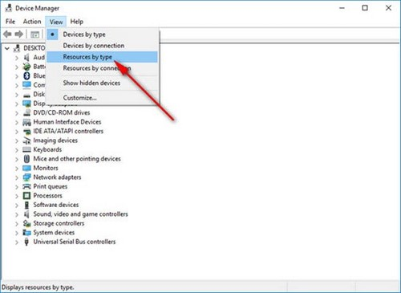

Cách giải phóng RAM giúp máy tính chạy nhanh hơn
Nếu máy tính của bạn có dung lượng RAM hạn chế, hãy chỉ cài đặt những ứng dụng cần thiết cho công việc của bạn. Ngoài ra cũng có công cụ rất hữu ích đó là CCleaner dọn dẹp bộ nhớ ổ cứng, xóa file rác và những tiến trình không cần thiết giúp tăng tốc máy tính của bạn bà hoạt động trơn tru hơn.Cốc Cốc là một trong những trình duyệt phổ biến tại Việt Nam hiện nay, việc dùng Cốc Cốc giúp bạn lướt web, vào Facebook đơn giản hơn, tuy nhiên, nhiều trường hợp Cốc Cốc dùng nhiều RAM khiến cho các hoạt động khác của bạn bị chậm lại hoặc có thể máy tính bị đơ, có nhiều cách để khắc phục lỗi Cốc Cốc dùng nhiều RAM mà không tốn quá nhiều công sức. Chúc các bạn thành công !
- Blog Việt
- Sưu tầm - độc - đẹp
- Thủ thuật blog chat
- Quét virus trực tuyến
- Lưu trữ đồng bộ dữ liệu trực tuyến 24/7
- Chuyển file Word sang PDF
- Chuyển file Word sang PDF
- Chuyển file Word sang PDF
- Chuyển file Word sang PDF
- Chuyển file Word sang PDF